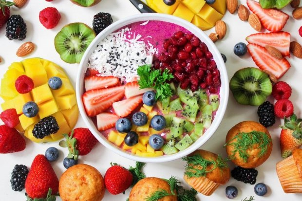

Pola Makan Sehat
Tanggal: 18 September 2022
Makanan adalah sumber utama nutrisi yang tubuh kita butuhkan untuk menjalani kehidupan yang sehat. Pola makan sehat memainkan peran penting dalam menjaga kesehatan tubuh dan berat badan yang optimal. Dalam artikel ini, kami akan membahas pentingnya pola makan sehat dan memberikan panduan untuk memilih makanan yang tepat guna mencapai tujuan tersebut. Konsumsi Makanan Bergizi Seimbang. Pola makan sehat melibatkan konsumsi makanan yang mengandung nutrisi yang seimbang. Ini berarti mengonsumsi berbagai macam makanan dari semua kelompok makanan yang penting bagi tubuh kita. Berikut adalah panduan untuk mencapai pola makan sehat:
- Buah dan Sayuran: Sertakan berbagai jenis buah dan sayuran dalam diet harian Anda. Buah-buahan dan sayuran mengandung serat, vitamin, mineral, dan antioksidan yang penting bagi kesehatan tubuh. Usahakan untuk mengonsumsi setidaknya lima porsi buah dan sayuran setiap hari.
- Sumber Protein: Pilih sumber protein yang sehat seperti ikan, ayam tanpa kulit, kacang-kacangan, dan biji-bijian. Protein penting untuk membangun dan memperbaiki jaringan tubuh, serta membantu menjaga kesehatan otot dan sistem kekebalan tubuh.
- Karbohidrat Sehat: Pilih karbohidrat kompleks yang lebih sehat, seperti roti gandum, nasi merah, dan sereal yang tinggi serat. Karbohidrat kompleks memberikan energi yang tahan lama dan membantu menjaga kadar gula darah stabil.
- Lemak Sehat: Pilih lemak sehat seperti lemak tak jenuh tunggal dan tak jenuh ganda yang terdapat dalam alpukat, kacang-kacangan, ikan berlemak, minyak zaitun, dan minyak biji rami. Hindari atau batasi konsumsi lemak jenuh dan trans yang dapat meningkatkan risiko penyakit jantung.
- Batasi Gula dan Garam: Hindari konsumsi makanan yang mengandung gula tambahan dan garam berlebih. Batasi minuman manis, makanan olahan, camilan manis, dan makanan cepat saji yang sering mengandung jumlah gula dan garam yang tinggi.
- Air Putih: Pastikan Anda terhidrasi dengan baik dengan minum cukup air putih setiap hari. Air membantu menjaga fungsi tubuh yang optimal, menjaga keseimbangan cairan, dan membantu pencernaan.
- Ukuran Porsi yang Seimbang: Perhatikan ukuran porsi makanan Anda. Penting untuk tidak mengonsumsi terlalu banyak atau terlalu sedikit makanan. Kenali kebutuhan kalori Anda dan sesuaikan dengan aktivitas fisik yang Anda lakukan.
Selain mengonsumsi makanan yang sehat, penting juga untuk mengadopsi kebiasaan makan yang baik, seperti mengunyah makanan dengan perlahan, menghindari makan di depan layar, dan makan dengan penuh kesadaran.
Pola makan sehat adalah komponen penting dalam menjaga kesehatan secara keseluruhan. Dengan memperhatikan komposisi makanan yang Anda konsumsi dan mengikuti panduan gizi yang seimbang, Anda dapat memberikan nutrisi yang diperlukan tubuh, menjaga berat badan yang sehat, dan mengurangi risiko penyakit kronis. Ingatlah bahwa setiap perubahan kecil dalam pola makan Anda dapat memiliki dampak positif dalam jangka panjang terhadap kesehatan Anda.